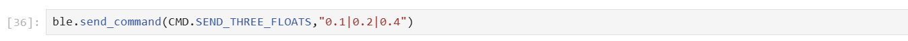

Lab 1B: Bluetooth Setup
Prelab
I already had Python's virtualenv package installed, so I created a new directory for Lab 1, initialized a venv named 'FastRobots_ble', and installed the required packages with pip.

BLE stands for Bluetooth Low Energy, a communication protocol for wireless communication between devices that consumes little power. BLE utilizes the GATT profile, which is a peripheral-central model that defines device interactions. In our codebase, after establishing a Bluetooth connection to the Nano, the functions provided through imports in the 'demo.ipynb' allow us to read, write, and subscribe to characteristics that are advertised by our Nano board. The Nano runs 'ble_arduino.ino', which contains the RobotCommand class used to parse incoming commands from the laptop client, and a switch statement (defined in handle_command()) to determine and execute the corresponding commands that we will implement throughout the lab.
Configuration
- 1. I first installed the ArduinoBLE library and then flashed the Artemis Nano with the demo sketch provided by the lab's codebase.
- 2. The demo sketch printed out the Nano's MAC address which I made sure to left pad with 0s to get a full 12 hex address. I then updated the corresponding variable in the config .yaml file.

- 3. I then generated a UUID to replace the existing BLE (Bluetooth Low Energy Characteristic) to avoid my computer connecting to other boards and updated this in the .yaml file as well.
Task 1
I added code to the Nano's sketch to prepend the string 'Echoing:' and postpending the ':P' emoticon to any received strings read from the TX characteristic.
Starting Jupyter Lab, I ran the relevant import statements and then called the Echo command which gave the following output.

Task 2
I then added the above code to loop through 3 received characters, append them to an array, and print out the 3 received floats.

Task 3
I then wrote a new command called GET_TIME_MILLIS that utilizes Arduino's millis() function to get the current program time and uploaded it to the Nano.
This is the resulting output retreived by the Jupyter Notebook:

Task 4 & 5
In my Jupyter Notebook, I used the bleak package's 'start_notify' function to start notifications on the ['RX_STRING'] uuid, and created a callback function called 'notification_handler' to convert the received byte arrays into printable strings.
I then wrote a loop function for my Arduino sketch that would continually send the current program time from the board using the millis() function for 10 seconds.

To calculate the effective data transfer rate, I modified my callback function to append the received messages to a Python list. I could then measure the length of the list to estimate the effective data transfer rate.
As shown above, in the 10 seconds, the Nano was able to send 253 messages (as measured by the length of the list), or 25.3 messages per second. Each transmission consisted of 1 float, or 32 bits (4 bytes) of data. The effective data transfer rate for my method was approximately:
\[ \frac{253}{10} = 25.3 \, \text{messages/second} \]
The total data transfer rate in bytes per second is:
\[ 25.3 \times 4 = 101 \, \text{bytes/second} \]
Task 6
For this task, instead of sending time measurements as soon as my board sampled them, I added the following function called 'SEND_TIME_DATA' to my Arduino sketch:
This function utilizes two global variables, 'timearray' and 'datasize'. 'timearray' is an empty float array initialized with size 'datasize' (in this case, my datasize was 50). The function loops up to the size of 'datasize' to guard against overfilling the array, and fills 'timearray' with 50 sequential time samplings.
It then loops through the 'timearray' and sends each reading as a formatted timestamp string.

On the Jupyter Notebook, I called the 'SEND_TIME_DATA' function, and initiated the notification handler, which processed the incoming data and again appended the received data into a Python list which I could measure to ensure all 50 measurements had been sent over.

No lost measurements!
Task 7
In a similar fashion, I created a new function in my Arduino sketch called GET_TEMP_READINGS:
This function samples the time and temperature each 50 times, and stored each set of 50 samples into the global 'timearray' and 'temparray' variables.
The function then loops through each array and sends the combined temperature readings to my laptop.
I made a slight modification to the notification handler, prefixing "Temp Reading from Nano" to each temperature reading instead:

On the Jupyter Notebook, I called the 'SEND_TIME_DATA' function, and initiated the notification handler to get the following results:
Task 8
Discuss the differences between these two methods, the advantages and disadvantages of both and the potential scenarios that you might choose one method over the other.
In the first method created in tasks 4 & 5, the speed at which data could be sent was limited by the sampling rate of the millis() and temperature functions. The board physically cannot transmit the time or temp readings at a rate faster than the functions take to run. However, in the second method, where time and temperature measurements are precalculated and stored in arrays, the most direct limitation of the data transfer speed seems to be the clock frequency of the Nano's CPU and however many CPU cycles it takes to append a reading from memory to the writeable GATT characteristic.
I could see how the first method has an advantage of the data being closer to real-time measurements. In a real-time feedback use case, this would likely be the preferred choice between the two methods as the readings are more closely related to the physical time that the sampling was taken. However, a disadvantage of this method is the decreased speed of data transfer and increased possibility of disruptions when measurements are sent. In a case where we are okay with not receiving immediate feedback from our peripheral device, and we want to instead just need to analyze actions of the bot after they have taken place, the second method might be a more reliable and faster choice. A downside to this method however is the increased RAM utilization by creating extra data structures to hold measurements before sending them to the central device.
How “quickly” can the second method record data?
The time taken to send the 50 messages was calculated using the recorded time difference between the first and last sample: 64 milliseconds. Assuming this rate remains constant, the estimated message transfer speed of the Nano with this method is approximately \( \frac{50}{0.064} \approx 781 \) messages per second. Sending just one 4-byte float, this results in an effective data transfer speed of:
\[ 781 \times 4 = 3,124 \text{ bytes/second} \]
The Artemis board has 384 kB of RAM. Approximately how much data can you store to send without running out of memory?
If the Artemis board has 384 kB of RAM, and we stored each value as a float, which each comprised of 4 bytes, we could theoretically store at most 96,000 total floats, or 48,000 total timestamp and temperature reading pairs before the board ran out of memory.Lab 1B Discussion
In this lab, I learned how to establish a BLE connection between my laptop and the Artemis Nano board, as well as how to create a notification handler to listen to changes on a specific GATT characteristic.
I initially struggled with implementing the notification handler and deciphering its parameters, but reading the provided lab text in the Jupyter Notebook was really helpful in understanding its implementation.